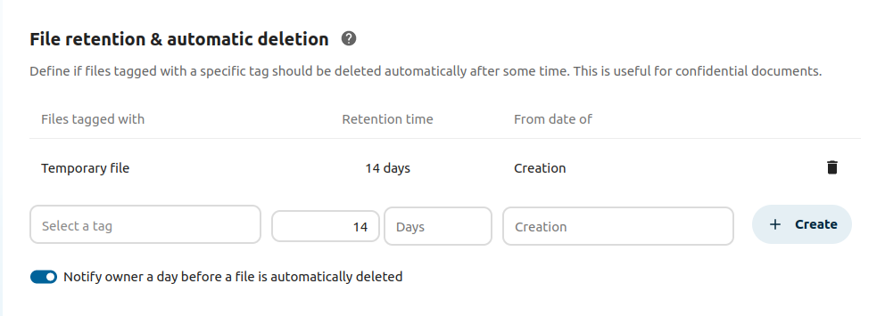

After installing the Retention app as described in Apps management
navigate to the configuration and locate the Workflow settings.

The rule from the example will delete all files tagged with Temporaryfile 14 days after the creation.
You can also use the “Notify owner a day before a file is automatically deleted” option to
make sure the file owner will get a notification before a file will be deleted.
Similar to Files access control retention should use restricted or invisible
tags. Otherwise any user can remove the tag and the file is not removed after the given
period. Use Automated tagging of files to assign such tags to newly uploaded files.
Currently retention is based on the creation date of the file. The sync client sends
the original creation date to the server, while uploading through the web interface
will create a new file with a new creation date.
We hope to be able to add a uploaddate to the filesystem soon, which would make more
sense. Until then this potentially unexpected behavior has to be taken into account.